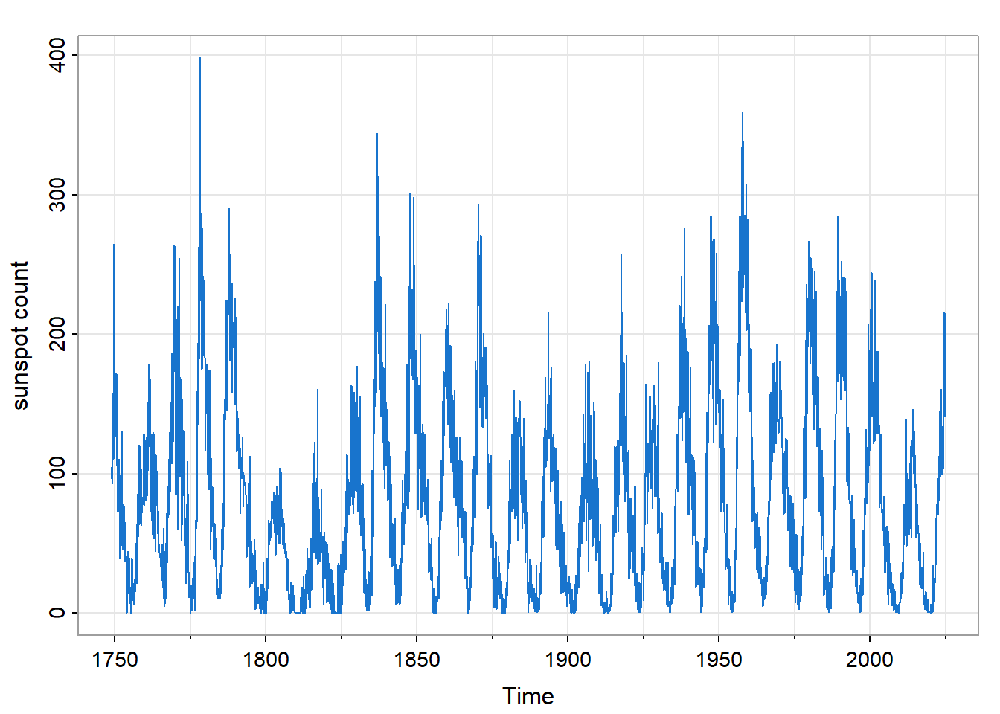
Time Series Data Analysis
An Overview
Abstract
Introduce data examples in which successive observations are statistically dependent. Discuss corresponding data analysis methods. Introduction
This technical note gives examples of data in which successive observations are statistically dependent and are typically indexed by time.1 Time series data sampled at regular intervals (daily stock prices, for example) are the most common case, followed by point process data representing the occurrence of events (earthquakes, for example) at random times.
Nearly all of the time series examples presented here are from the selected textbook (Shumway and Stoffer 2025) supported by R package astsa (Stoffer 2025).
Statistical models of such data include parametric models expressed in the time domain and non-parametric models expressed in the Fourier frequency domain (number of cycles per unit of time).
This note also comments on the detection of statistical dependence among successive observations and the modification of statistical tests and estimators for such data.
Natural Science Examples
Sunspots: Monthly Counts, 1749 - Present
Description
The figure below shows sunspot.month, the number of sunspots per month in R package datasets. Source: Solar Influences Data Analysis Center (SIDC), Royal Observatory of Belgium.
Context: Questions and Objectives
As described in Recalibration of the Sunspot-Number: Status Report | Solar Physics, the record of sunspot numbers links past and present solar behavior, and is the primary input for reconstructions of total solar irradiance (TSI) for years before 1978.
Old Faithful eruptions
Description
The figure below represents eruptions of the “Old Faithful” geyser in Yellowstone National Park, Wyoming from August 1 to August 15, 1985.2 The delay variable denotes the number of minutes since the previous eruption and the duration variable denotes the duration of the eruption, again in minutes.
The data represent a point process, where each observation records the time of occurrence of a certain type of event, and may include other information about the occurrence. Here the type of event is an eruption of the Old Faithful geyser. In addition to the time of the eruption we have the duration of the eruption.
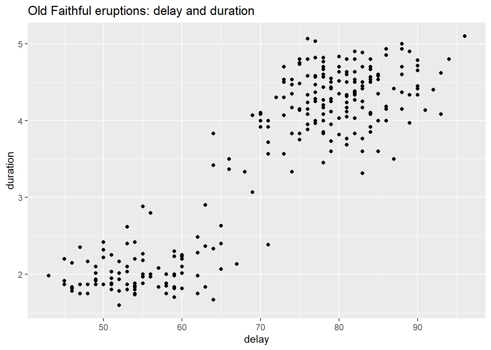
Context: Questions and Objectives
The figure shows two clusters of data points. Old Faithful eruptions are conjectured to occur in 2 distinct temporal patterns due to the presence of an upper and lower chamber beneath the vertical column (tube) that forms the geyser.
In this example, we have the goal of scientific understanding of a natural phenomenon, supported by statistical modeling.
Climate Change
Here are some of the data sets related to climate change from the R package astsa.
| pkg | ds | title |
|---|---|---|
| astsa | ENSO | El Nino - Southern Oscillation Index |
| astsa | cardox | Monthly Carbon Dioxide Levels at Mauna Loa |
| astsa | gtemp.month | Monthly global average surface temperatures by year |
| astsa | gtemp_both | Global mean land and open ocean temperature deviations, 1850-2023 |
| astsa | gtemp_land | Global mean land temperature deviations, 1850-2023 |
| astsa | gtemp_ocean | Global mean ocean temperature deviations, 1850-2023 |
| astsa | soi | Southern Oscillation Index |
Description
The figure below shows the time series gtemp_land and gtemp_ocean, annual temperature deviations (in ◦C) from averages for the period 1991-2020.3 The temperatures are based on averages over the Earth’s land area and over the part of the ocean that is free of ice at all times (open ocean). The time period is from 1850 to 2023. Note that the trend is not linear, with periods of leveling off followed by sharp increases.
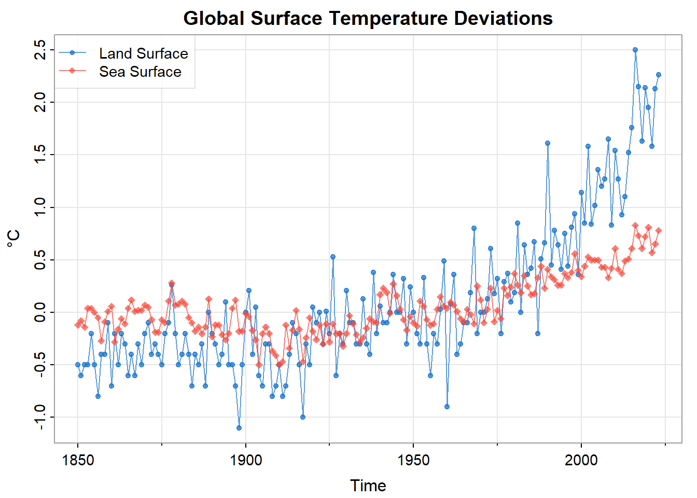
Context: Questions and Objectives
The upward trend in the two temperature series during the latter part of the 20th century has been used as an argument for the climate change hypothesis. Further data and information would be needed, of course, to estimate the contributions of natural and anthropogenic sources to the observed rise in temperature.
El Niño and Fish Population
Description
The next figure shows the Southern Oscillation Index (SOI, astsa::soi) and associated Recruitment (astsa::rec), an index of the number of viable new fish). Both series consist of 453 monthly values ranging over the years 1950–1987.
The two time series show two types of oscillation: an annual cycle (warm in the summer, cool in the winter), and a slower cycle that seems to repeat about every 4 years.
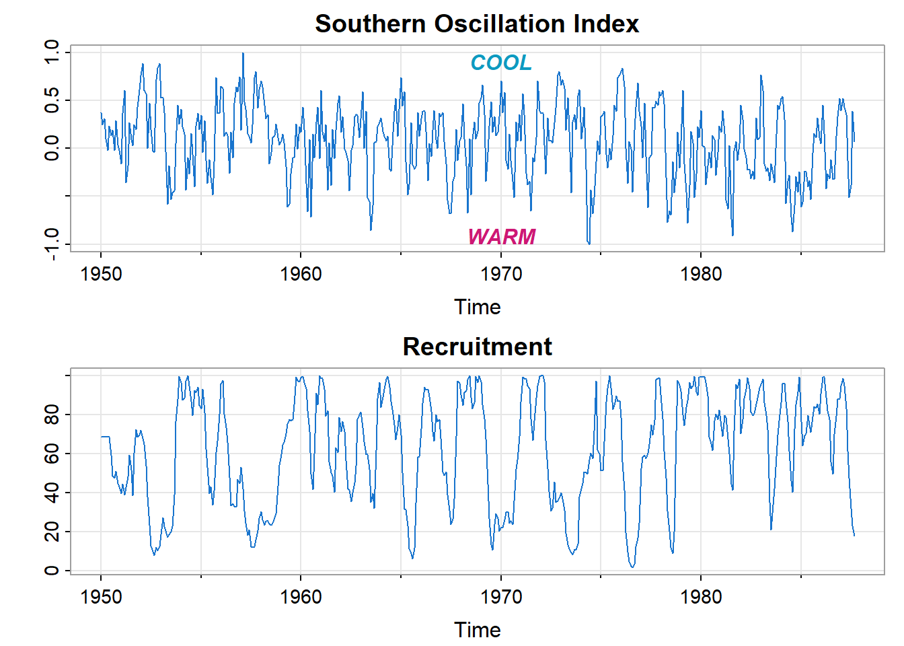
Context: Questions and Objectives
The processes that drive the periodicity of the two time series are of scientific interest. Frequency decomposition of the time series may help to identify those underlying processes.
Predator–Prey Interactions
Description
One of the classic studies of predator–prey interactions is based on the record of lynx (astsa::Lynx) and snowshoe hare (astsa::Hare) pelts purchased by the Hudson’s Bay Company of Canada from 1845 to 1935. Assuming pelt purchases are proportional to animals in the wild, the data are an indirect measure of predation.
These predator–prey interactions often lead to cyclical patterns of predator and prey abundance. The units of the data shown in the next figure are thousands of pelts per year.
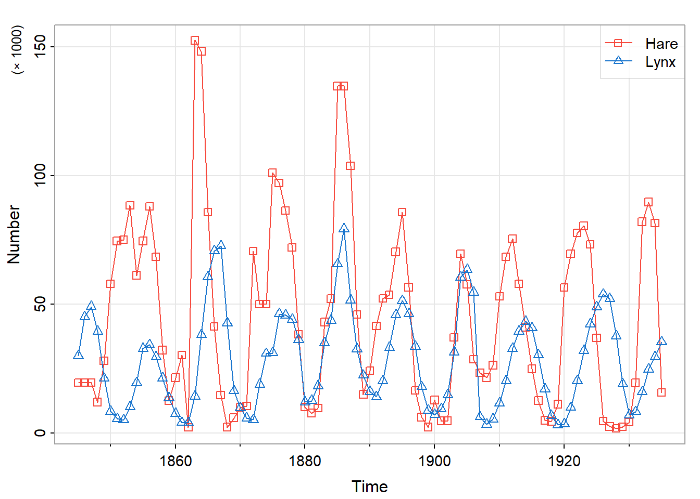
Context: Questions and Objectives
The scientific understanding of predator-prey interactions, starting with the Lotka-Volterra model (1910-1926), marked the beginnings of mathematical biology, and has been extended to the analysis of economic competition.
Business and Economic Examples
JJ Quarterly Earnings
Description
The figures below are Johnson & Johnson quarterly earnings per share in US dollars from 1960 through 1980 (astsa::jj). The second figure shows the same data on a \(\log_e\) scale. Superimposed on the upward trend is an annual pattern, including a sharp rise to first quarter earnings from those of the previous quarter.
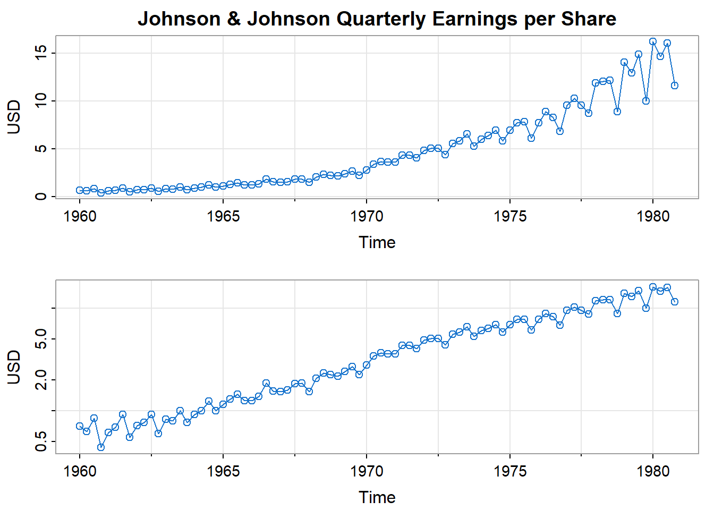
Context: Questions and Objectives
Developing a statistical model of the time series can be regarded as a first step toward an economic understanding. With that understanding, various interested parties can set company performance goals, make investment decisions, or use this company as an example in a larger study.
Dow Jones Industrial Average
Description
The next figure shows the trading day closings and returns (percent change)4 of the Dow Jones Industrial Average (DJIA, astsa::djia) from 2006 to 2016. It is easy to spot the financial crisis of 2008.
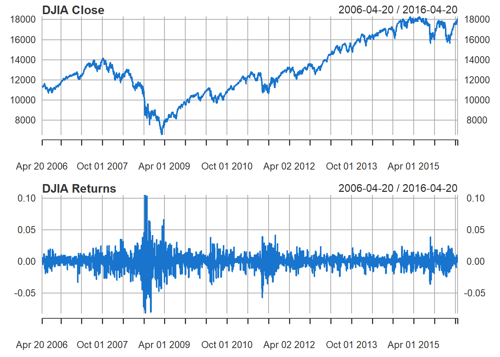
Context: Questions and Objectives
The returns of the DJIA are typical of other assets. The mean function of the series appears to be stable with an average return of approximately zero. Of equal interest are highly volatile (variable) periods. That variability is both a symptom and cause of market uncertainty. A challenge in the analysis of financial data is to forecast the volatility of future returns.
Signal Processing Examples
fMRI Imaging
Description
The next figure shows fMRI data (astsa::fmri1) from various locations in the cortex, thalamus, and cerebellum; n = 128 points, with one observation taken every 2 seconds. The square wave shows the stimulus signal (on or off).
The data are from a 1997 study that used fMRI to examine pain perception in humans. Here we focus on five subjects whose hands were periodically brushed. The stimulus (represented as a square wave in the figure) was applied for 32 seconds and then stopped for 32 seconds so that the signal period is 64 seconds. The sampling rate was one observation every 2 seconds for 256 seconds (n = 128).
The data are consecutive measures of blood oxygenation-level dependent (BOLD) signal intensity, which measures areas of activation in the brain. The series shown are from two locations each in the cortex, thalamus, and cerebellum and the values are averaged over subjects (these were evoked responses and all subjects were in phase).
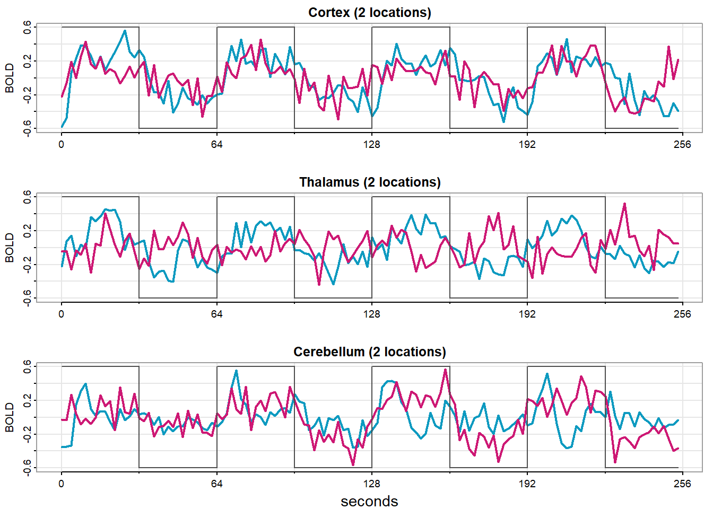
Context: Questions and Objectives
Note that the periodicities appear strongly in the motor cortex series and less so in the thalamus and cerebellum. This experiment has been designed to test whether these distinct areas of the brain respond differently to the stimulus.
Speech Recording
Description
The figure below shows the speech data set from the astsa package, a recording of the utterance aaahhh. Note the repetitive nature of the signal and the rather regular periodicities. Also note the repetition of small wavelets. The separation between wavelets is known as the pitch period and represents the response of the vocal tract filter to a periodic sequence of pulses stimulated by the opening and closing of the glottis.
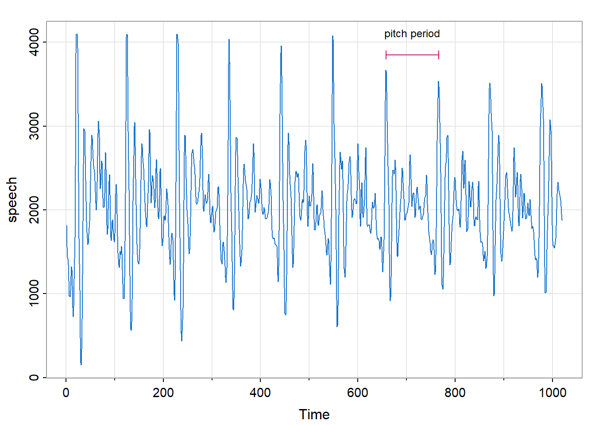
Context: Questions and Objectives
Computer recognition of speech is an active area of research and development. In the current case one might seek to transcribe the signal above into the text string “aaahhh”. One approach would be a frequency based decomposition (spectral analysis) of the signal yielding a signature of the utterance that could be matched to one or more entries in a library of such signatures.
Earthquakes and Explosions
Description
The next pair of figures show recordings (40 per second) at a Scandinavian seismic station of an earthquake (astsa::EQ5) and of a mining explosion (astsa::EXP6).
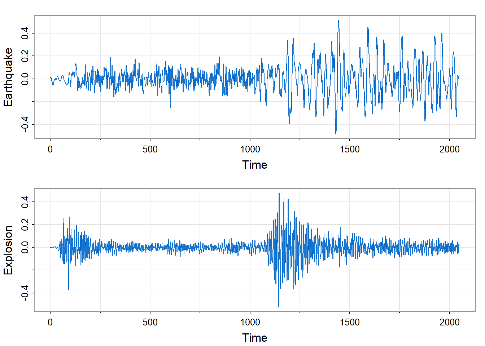
Context: Questions and Objectives
The general problem of interest is to distinguish between waveforms generated by earthquakes versus those generated by explosions.
Mathematical Framework
Statistical applications are often based on one or more data frames in which each row represents an observation and each column represents a variable of interest. Consider for example the predator-prey data previously shown.
# A tibble: 91 × 3
yr hare lynx
<dbl> <dbl> <dbl>
1 1845 19.6 30.1
2 1846 19.6 45.2
3 1847 19.6 49.2
4 1848 12.0 39.5
5 1849 28.0 21.2
# ℹ 86 more rowsThe distinction of time series analysis is that observations are indexed by time, and are not assumed to be statistically independent. In time series analysis, we typically consider the data to be a realization of a random process of the following form.
\[ \begin{align} X_\bullet (t) = (X_1 (t), \ldots, X_d (t)) \end{align} \]
In our example the number \(d\) of data columns is two (hare, lynx), the unit of time is one year, and the sampling frequency is once per year. The random process is idealized to span all time \((t \in \mathbb{Z})\), but the data of course span some finite period.
\[ \begin{align} t &= t_0 + u & \text{ with } u \in \{0, 1, \ldots, T-1 \} \end{align} \]
The expected value of the random process may be modeled by various functions of time: a constant, a linear trend, a seasonal component (periodic function), etc.
\[ \begin{align} m_\bullet (t) &= E \{ X_\bullet (t) \} \end{align} \]
In an additive model (which is most common), the residual random process, \(X_\bullet (t) - m_\bullet (t)\) , is assumed to be second-order stationary.5 That is, if we shift \(X_\bullet (\cdot)\) by any number of time units \(s\) to obtain a new proces \(Y_\bullet (\cdot)\), we assume that the respective covariance structures of \(X_\bullet (\cdot)\) and \(Y_\bullet (\cdot)\) are the same.
\[ \begin{align} Y_\bullet (t) &= \mathcal{B}^s \{ X_\bullet (\cdot) \} (t) \\ &= X_\bullet (t - s) \end{align} \]
Here \(\mathcal{B}\) denotes the back-shift operator that shifts time by one unit, so that \(\mathcal{B}^s\) (that is, \(s\) repeated applications of \(\mathcal{B}\)) shifts time by \(s\) units. Then second-order stationarity can be expressed as follows.
\[ \begin{align} Cov \{ X_a (t + u), X_b (t) \} &= Cov \{ Y_a (t + u), Y_b (t) \} \\ &= Cov \{ X_a (t + u - s), X_b (t - s) \} \\ \\ & \text{for all } s \in \mathbb{Z} \text{ and } a, b \in \{ 1, \ldots, d \} \end{align} \]
Setting \(s = t\) we have
\[ \begin{align} Cov \{ X_a (t + u), X_b (t) \} &= Cov \{ X_a (u), X_b (0) \} \end{align} \] Consequently, second-order stationarity enables one to define and estimate the following auto-covariance function.
\[ \begin{align} \gamma_{\bullet, \bullet} (u) &= \left \{ \gamma_{a, b} (u) \right \}_{a, b = 1}^d \\ \\ \text{where} \\ \gamma_{a, b} (u) &= Cov \{ X_a (t + u), X_b (t) \} \\ &= Cov \{ X_a (u), X_b (0) \} \end{align} \]
The auto-covariance function is often rescaled to yield the autocorrelation function \(\rho_{\bullet, \bullet}(\cdot)\).
\[ \begin{align} \rho_{\bullet, \bullet} (u) &= \left \{ \rho_{a, b} (u) \right \}_{a, b = 1}^d \\ \\ \text{where} \\ \rho_{a, b} &= cor \{ X_a (u), X_b (0) \} \\ &= \frac{\gamma_{a, b} (u)}{\sqrt{\gamma_{a, a} (0) \; \gamma_{b, b} (0)}} \end{align} \]
Operations on Time Series
The data transformations used on independent observations are applicable to time series data. For example, in the case of Johnson and Johnson quarterly earnings, we saw that the transformed time series, \(Y(t) = \log_e (X(t))\), could be more closely approximated by a linear trend.
In addition to the data transformations used on independent observations, we often want to average time series data over time.
As an example, the figure below shows a 5-year moving average of the global temperature data previously shown. This operation smooths out local fluctuations to show the overall trend more clearly.
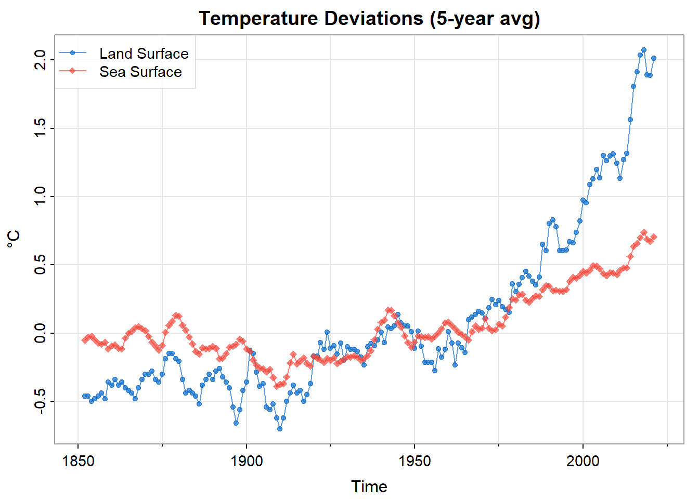
In this case the 5-year moving average operation can be expressed as follows.6
\[ \begin{align} Y_\bullet (t) &= \frac{1}{5} \sum_{u = -2}^2 X_\bullet (t - u) \end{align} \]
Here \(X_\bullet (\cdot)\) is a two-component random process representing annual global averages of land and ocean temperatures. This 5-year moving average is an example of a linear, time-invariant filter, having the following general form.
\[ \begin{align} Y_\bullet (t) &= a_{\bullet, \bullet} (\cdot) \; * \; X_\bullet (\cdot) \\ &= \sum_u a_{\bullet, \bullet} (u) \; \times \; X_\bullet (t - u) \end{align} \]
where \(a_{\bullet, \bullet} (\cdot)\) is a sequence of \(d \times d\) matrices and \(*\) denotes discrete convolution.
For example, here’s the 5-year moving average above expressed in this format.
\[ \begin{align} a_{\bullet, \bullet} (u) &= \begin{cases} \frac{1}{5} I & \text{ for } |u| \le 2 \\ 0 & \text{ for } |u| > 2 \end{cases} \end{align} \]
As noted above, the moving average operation can help to reveal and thus model the trend in the process, \(m_\bullet (t)\). Forming the residual series \(X_\bullet (t) - m_\bullet (t)\) is called “de-trending”.
Alternatively, if the trend is linear it may also be removed by forming differences of the current observation minus its predecessor. This is an application of the “differencing” operator \(\mathcal{D} = \mathcal{I} - \mathcal{B}\).
\[ \begin{align} Y_\bullet (t) &= X_\bullet (t) - X_\bullet (t - 1) \\ &= (\mathcal{I} - \mathcal{B}) \{ X_\bullet (\cdot) \} (t) \\ &= \mathcal{D} \{ X_\bullet (\cdot) \} (t) \end{align} \]
In the DJIA stock index example, returns were defined as the log-ratio of successive closing values, calculated as the difference in successive values of the logarithm of the closing values. Here’s the differencing operator \(\mathcal{D}\) in the filtering format.
\[ \begin{align} a_{\bullet, \bullet} (u) &= \begin{cases} I & \text{ for } u = 0 \\ -I & \text{ for } u = 1 \\ 0 & \text{ otherwise } \end{cases} \end{align} \]
A moving average operation smooths the time series on which it operates. That is, it allows low-frequency components to pass, while diminishing high-frequency components. Therefore the moving average operation is categorized as a low-pass filter. The differencing operator can be categorized as a high-pass filter.
In signal-processing applications a linear, time-invariant filter \(a_{\bullet, \bullet} (\cdot)\) may be designed to extract certain types of signals that are contaminated by noise.
Data Analysis Objectives & Methods
There are a number of ways to categorize types of data analysis. For example, the distinction between confirmatory and exploratory data analysis has been widely discussed over several decades. But for present purposes we consider the complementary aims of decision support and scientific understanding.
Decision Support
Decisions are often made via complex human interactions that are difficult to represent formally. Financial transactions, however, are easier to record and model. Financial management operates at markedly different time scales. At one extreme, consider algorithms that respond in real time to changing market valuations. At the other extreme we have decisions pertaining to multi-year projects. The financial stakes warrant substantial investment, which has fueled steady advancement in all aspects of the technology, including time series modeling. To be useful the models must be as precise and as reliable as possible (with precision and reliability balanced as deemed appropriate in each situation).
Time series models that support decisions (in any setting) are typically time-domain parametric models whose components may include data transformations along with filtering algorithms. We leave the description of such models for a separate technical note.
Scientific Understanding
Enhancing human understanding of natural and social phenomena can be gratifying in itself, but may also pertain directly or indirectly to human welfare. The natural sciences offer many examples of phenomena that are usefully decomposed by frequency-domain time series models. Again, description of these methods is left to a separate technical note.
Overlap
Of course societal decisions often require both action-oriented recommendations and scientific understanding of what is known and unknown pertaining to the decision. Decisions related to climate change are a leading example of this overlap.
To illustrate, the pair of figures below show monthly \(CO_2\) levels (ppm) taken at the Mauna Loa, Hawaii observatory (top) and a differencing of the data to remove trends (bottom).
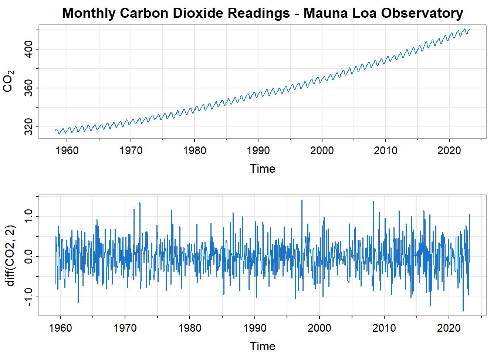
The next figure shows a 5-year forecast based on a time-domain model (a seasonal auto-regressive, moving-average model).
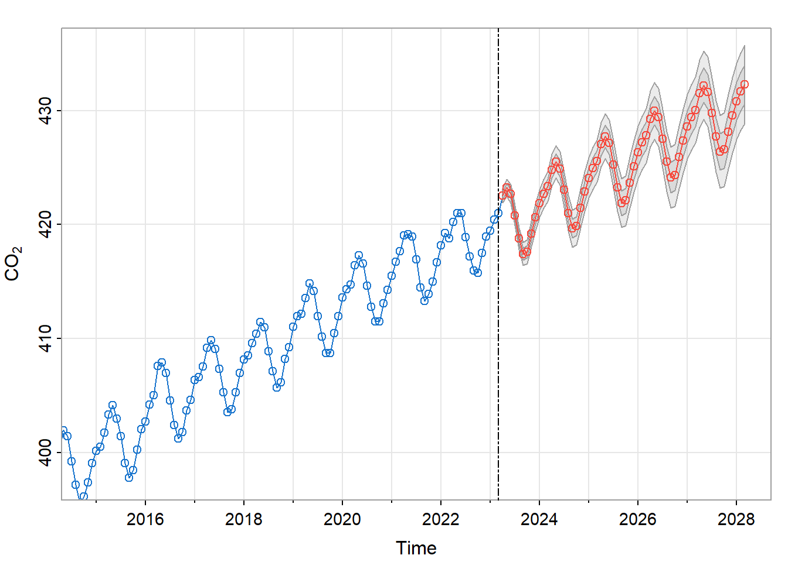
We leave the development of such models to a separate technical note. The point here is that such forecasts, when presented to support high-stakes societal decisions, are both valued for their precision and scrutinized as to their scientific reliability.
Detecting Serial Correlation
The process of building a statistical model (time series or not) is typically cyclic: examining data (or model residuals); conjecturing a statistical model (or model refinement); fitting the conjectured model; and examining the model residuals.
In time series analysis, an initial review of the data might include a test for serial correlation (autocorrelation). That is, one can check for correlation of \(X_\bullet (t)\) with \(X_\bullet (t - s)\) at several lags \(s\). If the data do appear to be auto-correlated, one might proceed to build a time series model. If the residuals of that model also appear to be auto-correlated or to exhibit some trend, one might seek to refine the model until the model residuals appear to be free of trend and autocorrelation.
Statistical Tests
There are several statistical tests for autocorrelation. One of the most widely used is the Ljung-Box test(Ljung and Box 1978) available in R as the function stats::Box.test() in which one specifies the maximal lag to be checked.
In the frequency domain, the variation exhibited in the data is decomposed into the variation from groups of sinusoidal functions, each group corresponding to a frequency band. From this perspective the absence of autocorrelation corresponds to each band contributing the same proportion of variance, a phenomenon called “white noise”. A test for such white noise is available in R as the function hwwntest::bartlettB()(Savchev and Nason 2023).
Autocorrelation and Estimator Variance
The presence of autocorrelation in the data requires adjustment of the usual variance calculations designed for data in which observations are statistically independent. Here’s an example.
Suppose that \(W(t)\) is a white noise process of independent and identically distributed (“iid”) random variables, and that \(X(\cdot)\) is the following filtered version of \(W(\cdot)\).
\[ \begin{align} X(t) &= W(t) + \theta \; W(t-1) \\ \\ & \text{where } -1 < \theta < 1 \end{align} \]
Then \(X(\cdot)\) is an example of a moving average random process. In the theory of such processes one usually assumes that \(X(\cdot)\) is observed for some interval of time \((t_0, \ldots, t_0 + T - 1)\) and that \(W(\cdot)\) is not observed. But for present purposes suppose that this is a simulation study in which both \(X(t)\) and \(W(\cdot)\) are generated over the same time interval and that the values of all parameters are known, including the population means, the population variances, and \(\theta\).
Let’s focus on the calculation of the sample mean and its variance. For \(W(\cdot)\) we have the following familiar formulas for the sum of observed values.
\[ \begin{align} S_{W, T} &= \sum_{t = t_0}^{t_0 + T -1} W(t) \\ E \left \{ S_{W, T} \right \} &= T \times E \left \{ W(t_0) \right \} \\ &= T \times \mu_W \\ Var \left \{ S_{W, T} \right \} &= T \times Var \left \{ W(t_0) \right \} \\ &= T \times \sigma_W^2 \end{align} \]
The sample mean is derived from the sample sum.
\[ \begin{align} \hat{\mu}_W &= \frac{S_{W, T}}{T} \\ \\ E \left \{ \hat{\mu}_W \right \} &= \frac{E \left \{ S_{W, T} \right \}}{T} \\ &= \mu_W \\ \\ Var \left \{ \hat{\mu}_W \right \} &= \frac{Var \left \{ S_{W, T} \right \}}{T^2} \\ &= \frac{ \sigma_W^2 }{T} \end{align} \]
The mean and variance of \(X(t)\) can be expressed as respective functions of the mean and variance of \(Z(t)\).
\[ \begin{align} \mu_X &= (1 +\theta) \; \mu_Z \\ \sigma_X^2 &= (1 +\theta^2) \; \sigma_Z^2 \end{align} \]
The variance formula for the sample sum, \(S_{X, T}\), differs from that of \(S_{Z, T}\), because \(X(\cdot)\) is auto-correlated. The auto-covariance function is
\[ \begin{align} \gamma_X (u) &= Cov \left ( X(t + u), X(t) \right ) \\ &= \begin{cases} (1 +\theta^2) \; \sigma_Z^2 & \text{ for } u = 0 \\ \theta \; \sigma_Z^2 & \text{ for } u = \pm 1 \\ 0 & \text{ for } |u| > 1 \end{cases} \end{align} \]
The auto-correlation function is thus7
\[ \begin{align} \rho_X (u) &= cor \left ( X(t + u), X(t) \right ) \\ &= \begin{cases} 1 & \text{ for } u = 0 \\ \frac{\theta}{1 +\theta^2} & \text{ for } u = \pm 1 \\ 0 & \text{ for } |u| > 1 \end{cases} \end{align} \]
Therefore
\[ \begin{align} Var \left \{ S_{X, T} \right \} &= Cov \left ( \sum_{s = t_0}^{t_0 + T - 1} X(s), \; \sum_{t = t_0}^{t_0 + T - 1} X(t) \right ) \\ &= \sum_{s = t_0}^{t_0 + T - 1} \sum_{y = t_0}^{t_0 + T - 1} Cov \left ( X(s), X(t) \right ) \\ &= \sum_{s = t_0}^{t_0 + T - 1} \sum_{y = t_0}^{t_0 + T - 1} \gamma_X (s - t) \\ &= \sum_{u = -T + 1}^{T - 1} (T - |u|) \; \gamma_X (u) \\ &= T \; \gamma_X (0) + 2 (T - 1) \; \gamma_X (1) \\ &= T \; \sigma_X^2 \; \left ( 1 + 2 \; (1 - \frac{1}{T}) \; \rho_X (1) \right ) \\ &= T \; \sigma_X^2 \; \left ( 1 + 2 \; (1 - \frac{1}{T}) \; \frac{\theta}{1 +\theta^2} \right ) \\ &= T \; \sigma_X^2 \; \frac{(1 + \theta)^2}{1 +\theta^2} - \sigma_X^2 \frac{2 \theta}{1 +\theta^2} \end{align} \]
In short, ignoring the autocorrelation of \(X(\cdot)\) would lead to erroneous calculations of the variance of \(S_{X, T}\) and \(\hat{\mu}_X\).
Effective Sample Size (ESS)
The magnitude of such erroneous calculations can be represented by a quantity called the effective sample size (ESS). The calculation of ESS varies with application8, but here’s the basic idea in the present context. Consider a finite sequence of independent draws from the distribution of the random variable \(X(t_0)\), thereby producing a sample of independent observations. Define the effective sample size, \(N_d\), to be the number of draws required to produce the same variance of the resulting sample mean as that of the auto-correlated case.
\[ \begin{align} \frac{\sigma_X^2}{N_d} &= Var \left \{ \hat{\mu}_X \right \} \\ &= \frac{ Var \left \{ S_{X, T} \right \} }{T^2} \end{align} \]
Equivalently
\[ \begin{align} N_d &= \frac{T^2 \sigma_X^2}{ Var \left \{ S_{X, T} \right \} } \end{align} \]
In our moving average example this yields
\[ \begin{align} N_d &= \frac{T^2 \sigma_X^2}{ Var \left \{ S_{X, T} \right \} } \\ &\sim \begin{cases} T \; \frac{1 +\theta^2}{(1 + \theta)^2} & \text{ as } T \rightarrow \infty \\ T^2 & \text{ as } \theta \rightarrow -1 \end{cases} \end{align} \]
As \(\theta\) increases from \(0\) towards \(1\) the matching number of independent draws \(N_d\) decreases from \(T\) towards \(T/2\). In the other direction, as \(\theta\) decreases from \(0\) towards \(-1\) the matching number of independent draws \(N_d\) increases from \(T\) towards \(T^2\).
The point here is that care must be taken when calculating the variance of estimators derived from time series data. This is a known issue addressed by available software.
Closing Remarks
This technical note is intended as an overview of time series analysis based on the textbook (Shumway and Stoffer 2025) cited below along with the supporting R package astsa (Stoffer 2025). The reader should feel free to select the presented examples of greatest interest, skipping others to save time.
In this note, time-domain and frequency-domain methods are mentioned only in the broadest terms, leaving details for other presentations.
For a more comprehensive listing of relevant R packages see the time series task view available from CRAN, the Comprehensive R Archive Network.
See Regression and Time Series Primer for a more detailed introduction to the topics presented here. And see Fun with asta for an introduction to R package astsa.
Glossary of Math Symbols
$$ \[\begin{align} {a_{\bullet, \bullet} (u)} \quad & \quad \text{matrix of filter coefficients at time-shift } u \\ \mathcal{B} \quad & \quad \text{back-shift operator } \\ \mathcal{D} \quad & \quad \text{difference operator } \mathcal{I - B} \\ \gamma_{\bullet, \bullet} (u) \quad & \quad \text{auto-covariance matrix at time-shift } u \\ \mathcal{I} \quad & \quad \text{identity operator } \\ m_\bullet (t) \quad & \quad E \{ X_\bullet (t) \} \text{, expected value of } X_\bullet (t) \\ \mu_X \quad & \quad E\{ X (t_0) \} \text{, expected value of } X (t_0) \\ \hat{\mu} _X \quad & \quad \text{sample mean, } S_{X, T} / T \\ N_d \quad & \quad \text{number of independent draws (effective sample size) } \\ \rho_{\bullet, \bullet} (u) \quad & \quad \text{auto-correlation matrix at time-shift } u \\ S_{X, T} \quad & \quad \text{the sample sum of T observations of } X (\cdot) \\ \sigma_X^2 \quad & \quad Var \{ X (t_0) \} \text{, variance of } X (t_0) \\ T \quad & \quad \text{number of time series observations } \\ t_0 \quad & \quad \text{initial time index of time series observations } \\ X_\bullet (t) \quad & \quad (X_1 (t), \ldots, X_d (t)) \text{, a multivariate random process } \end{align}\] $$
References
Ljung, G. M., and G. E. P. Box. 1978. “On a Measure of Lack of Fit in Time Series Models.” Biometrika 65 (2): 297–303. https://doi.org/10.1093/biomet/65.2.297.
Savchev, Delyan, and Guy Nason. 2023. “Hwwntest: Tests of White Noise Using Wavelets.” https://doi.org/10.32614/CRAN.package.hwwntest.
Shumway, Robert H., and David S. Stoffer. 2025. Time Series Analysis and Its Applications. Springer Nature Switzerland. https://doi.org/10.1007/978-3-031-70584-7.
Stoffer, David. 2025. “Astsa: Applied Statistical Time Series Analysis.” https://doi.org/10.32614/CRAN.package.astsa.
Thomson, David J. 1977. “Spectrum Estimation Techniques for Characterization and Development of WT4 Waveguide-I.” Bell System Technical Journal 56 (9): 1769–1815. https://doi.org/10.1002/j.1538-7305.1977.tb00591.x.
Venables, W. N., and B. D. Ripley. 2002. “Modern Applied Statistics with s.” https://www.stats.ox.ac.uk/pub/MASS4/.
Footnotes
In rare cases time series methods are applied to data indexed not by time but rather by some other measure, e.g. distance. See for example (Thomson 1977).↩︎
There are two prominent
Rpackages representing the Old Faithful measurements during August, 1985. TheMASS::geyserdata set of 299 observations (Venables and Ripley 2002) includes nocturnal measurements whose duration was coded as 2, 3 or 4 minutes, having originally been described as ‘short’, ‘medium’ or ‘long’. Thedatasets::faithfuldata set of 272 measurements, shown in the figure, excludes 27 of these nocturnal measurements.↩︎The data source is NOAA, who use the term “anomaly” rather than “deviation”. Further clarifications are pending.↩︎
The return is here calculated as \(log_e\) of the ratio: current day’s closing price divided by that of the preceding day. The median value is about 6 basis points.↩︎
The assumption of second-order (or wide-sense) stationarity suffices for most time series models used in practice, but some cases may call for the assumption of strict stationarity. This means that for any finite set of times \((t_1, \ldots, t_K)\) and any time-shift \(s\), the joint probability distribution of \((X_\bullet (t_1), \ldots, X_\bullet (t_K))\) is identical to that of \((X_\bullet (t_1 - s), \ldots, X_\bullet (t_K - s))\).↩︎
The example illustrates a simple moving average. A weighted moving average may have non-negative coefficients that sum to unity. The term “moving average” is also used more broadly to mean a component of a time series model that filters an uncorrelated noise sequence.↩︎
Note that \(\rho_X (1)\) is restricted to the interval \((-0.5, 0.5)\), since we have restricted \(\theta\) to the interval \((-1, 1)\).↩︎
The
Rpackageastsaprovides functionESS().↩︎